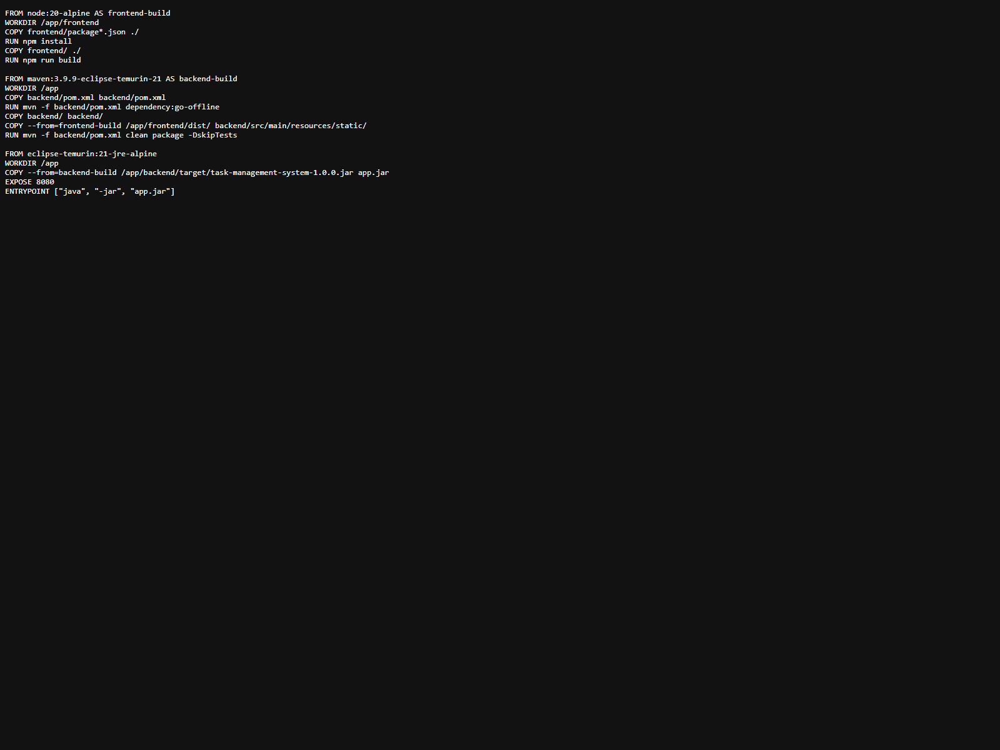
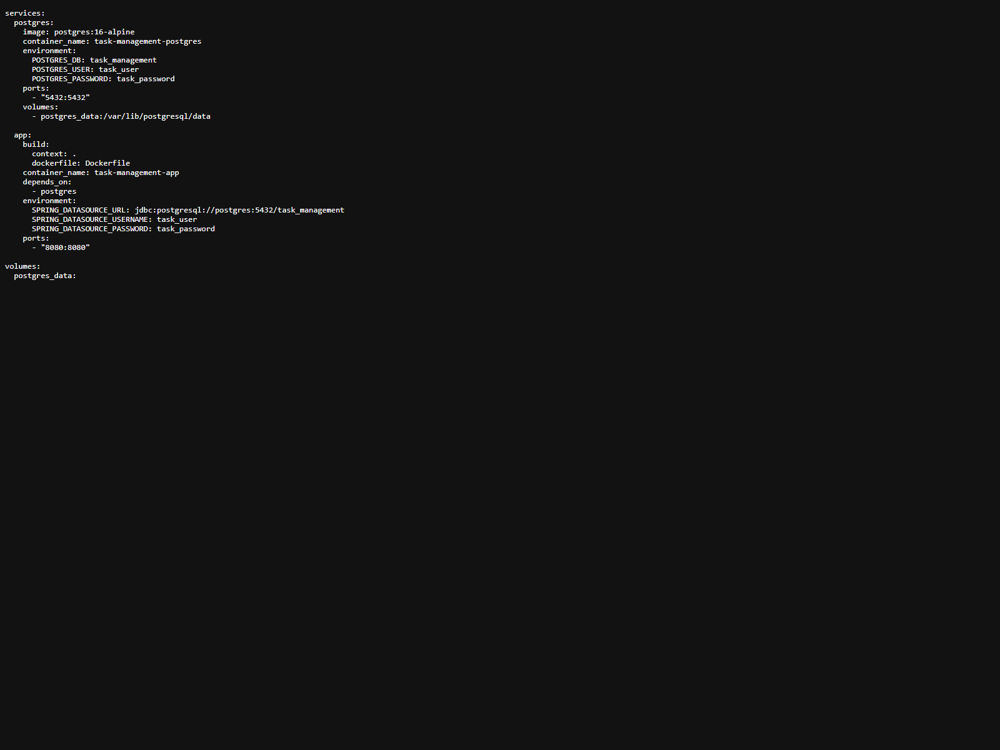
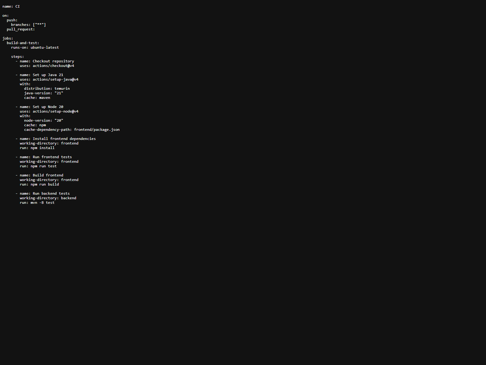
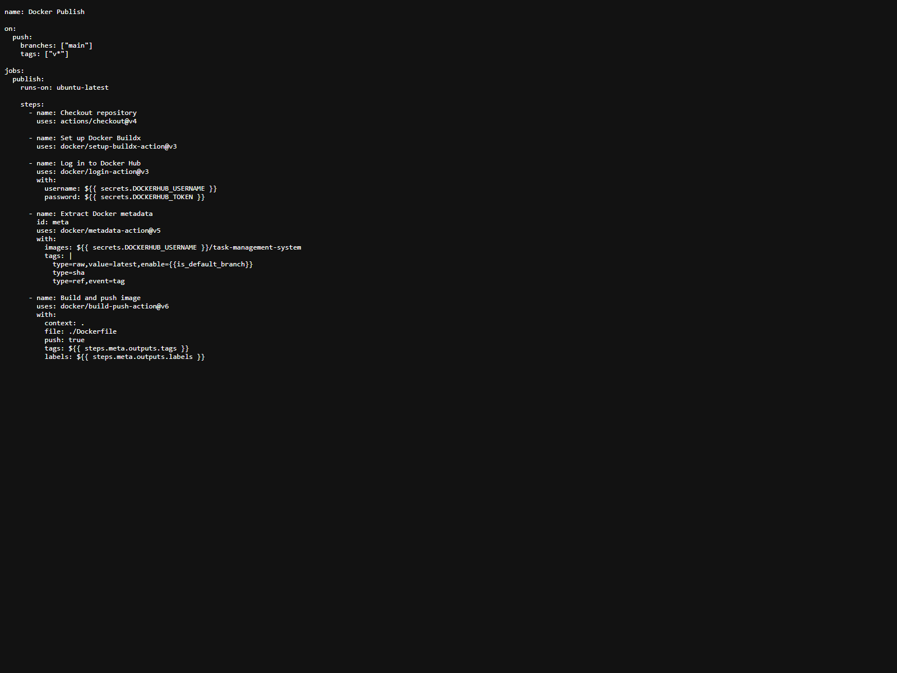

Member 4 was responsible for DevOps, Docker, and CI/CD. This role prepared containerization, automated workflows, and ensured the project could be built and tested automatically.
Write Dockerfile
Write docker-compose
Set up GitHub Actions
Make Sure App Builds Automatically
Main Responsibilities
1
Containerized the appWrote the Dockerfile to package the frontend and backend into a runnable application image.
2
Connected local servicesCreated docker-compose to run the application and PostgreSQL together in a local development environment.
3
Automated CISet up GitHub Actions workflows to install dependencies, run tests, and validate the full project automatically.
4
Configured CDPrepared automatic Docker image publishing and ensured the app could build reliably from the main branch.

DockerfileReal multi-stage build file used in this project.

docker-compose.ymlReal local service orchestration for app and database.

ci.ymlReal GitHub Actions CI workflow used to validate the project.

docker-publish.ymlReal workflow file for building and publishing Docker images.